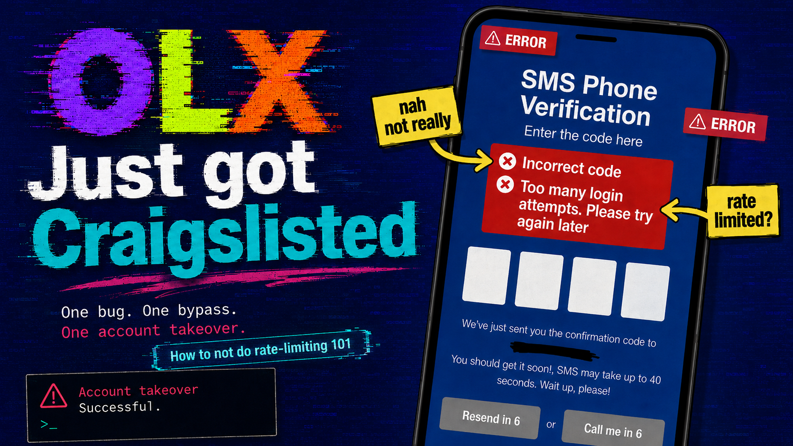
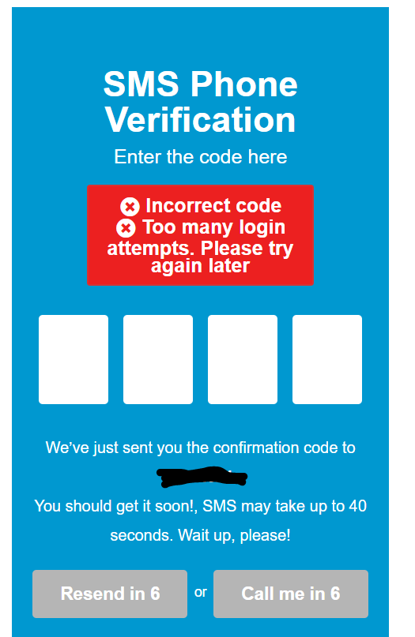
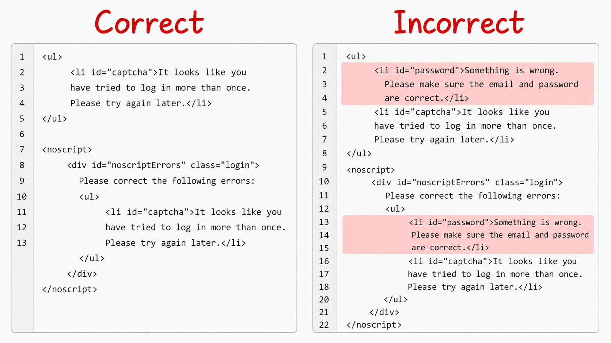
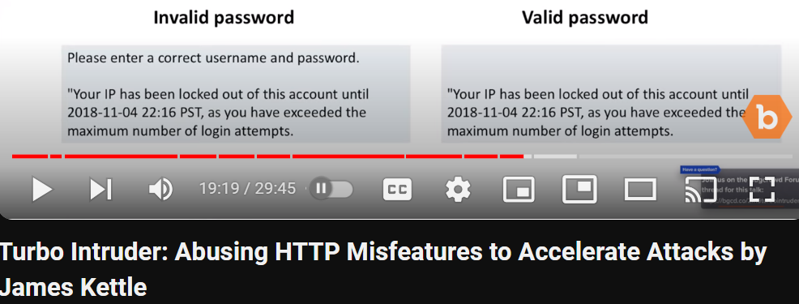

When “Try Again Later” Still Means “You Guessed Right”: OLX account takeover.

Intro
One lazy afternoon back in high school, I was browsing OLX, a Craigslist-like site, on my computer and decided to create an account. To my surprise, the site had changed its login policy and now required a phone number. Since my phone was in another room and, being the lazy person I am, I did not feel like going to get it, I entered my number and started mashing the keyboard on the verify-code page until a rate limit was triggered. But I noticed an unusual message, so I finally went to get my phone for the story to really begin.
So far, nothing special. The flow looked normal. I had tried enough wrong codes, the site responded with a “try again later” message, and that should have been the end of the story. But before I went to grab my phone, I noticed something unusual in the way the page responded. It was one of those tiny details that is easy to ignore if you are not paying attention, and impossible to unsee once you are.
What Was That?
I finally went to the other room, grabbed my phone, read the legitimate SMS code, and typed that exact code into the page while the rate limit was still active. The strange message disappeared. Then I entered a wrong code again, and the message came back. I repeated that a few times just to make sure I was not imagining it. Every time the code was wrong, the page showed both the lockout banner and the invalid-code signal. Every time the code was right, the page kept the lockout banner but dropped the invalid part.
That was the moment the bug became clear. The site was supposed to be done talking after the lockout kicked in. Instead, it kept leaking whether the submitted OTP was correct. The screen still looked blocked. It just stopped looking wrong.

In simpler terms, the flow looked like this:
- You enter an invalid code: the page says the code is invalid.
- You enter enough invalid codes: the page says try again later, but still says the code is invalid.
- You enter the correct code right after that: the page still says try again later, but the invalid-code signal disappears.
That meant the lockout state was not neutral at all. It was still giving away the answer.
Where the bug lives
The real issue was not one screen. It was the verification-code logic itself, reused across signup, phone verification, 2FA-style checks, password reset, and the rest of the account flow.

Why the bug was exploitable: code expiry? not really.
There were really two flaws here, and they worked together perfectly. The first flaw was that I could still tell whether the submitted code was right or wrong even after the rate limit was active. The second flaw was that the verification code stayed valid long enough for that leaked signal to matter. The “try again later” state lasted about seven minutes, which was more than enough time to use the leak.
On its own, a correctness signal is already bad. But a correctness signal plus time turns into an attack path. A lockout is supposed to make the application boring. Once the site decides you have tried too many times, every blocked response should look equally useless. Here, it didn’t. The site kept answering the only question that mattered.
That becomes much more severe once you stop thinking only about signup or one phone-verification page and start thinking about every place the same code flow might be reused. If that exact behavior is sitting behind login verification, 2FA-style prompts, password reset, and account recovery, then you are no longer looking at one quirky screen. You are looking at a system-wide verification flaw.
This kind of leak is not unique to one product either. Years later, I came across a James Kettle video showing the same basic idea: a locked state is supposed to stop being informative, but the application still reacts differently to a valid value and an invalid one.

Exploiting The Two Flaws
Once the behavior was clear, the rest was straightforward. The code space was only four digits, which means 10,000 combinations. That fits comfortably inside a seven-minute window. Burp Intruder was enough. The setup was deliberately simple: send the four-digit values in random order, then grep for the word “invalid” and wait for the one response that no longer matched it.
The important detail is that the lockout did not stop the backend from evaluating the code. It only stopped the application from completing the flow normally. The server still checked each guess, and the response still changed when the guess was right. So the attack path was simple: trigger the lockout, spray guesses while the page is supposedly blocked, identify the one value that makes the invalid marker disappear, then wait out the timer or use a fresh session and submit only that winning code.
If you have never used Burp Intruder before, the screenshots below are just showing the basic loop: pick the verification-code field, tell Burp what kind of payloads to try, tell it what response marker to watch for, then look for the request that breaks the normal pattern.
Burp setup gallery
That is what made the bug dangerous. The code did not need to be exposed directly. The application itself kept answering yes or no after each guess, even while pretending it was no longer accepting guesses in a meaningful way. With a four-digit space and a validity window that outlived the lockout, the rate limit stopped being a defense and turned into a cosmetic delay.
That same pattern matters even more in password reset. At that point, you are not dealing with an annoying verification bypass on your own account creation flow. You are dealing with a system that can help an attacker confirm the right reset code for someone else’s account. And because the same verification behavior was reused across the broader account system, password reset was not some isolated bonus impact. It was part of the same broken design.
Impact: Full account takeover with persistence
This is the part the earlier framing understated. The bug was not limited to one narrow flow. It affected the verification logic itself, which means it could show up anywhere OLX reused that code screen: signup, login verification, 2FA-style checks, password reset, account recovery, what you name it. A weird signup bug is one thing. A shared verification flaw across the account system is a very different class of problem.
In other words, the attacker does not merely learn something useful about one OTP prompt. They can use the same leaked signal on the reset path, set a new password, and take over the account through a channel that the application itself treats as legitimate recovery. Once the same bug sits behind both verification and recovery, “it leaks whether the code was right” is no longer the story. Account takeover is.
The ugly part did not stop there. Once the attacker got in, there was no clean way to kick them back out. OLX lacked session revocation on password change, so changing the password did not reliably kill the attacker's existing access. Even after the victim rotated the password, the attacker could stay inside the account, which turned the bug from plain account takeover into account takeover with persistence.
The regional OLX screenshot also points toward a shared authentication stack across several Middle Eastern properties. That expands the scope from “one odd site bug” to “a reusable verification mistake across a platform family.” It affected almost all of OLX’s Middle Eastern domains, and the surrounding evidence points toward Egypt, Jordan, the UAE, Bahrain, Saudi Arabia, Kuwait, Oman, Qatar, and Lebanon. Even without overstating anything, that is a serious blast radius.
I did try to report it. The report went nowhere useful. I was still in high school, did not have the time to turn it into a polished video or full proof-of-concept, and the security team was so incompetent that they did not even know how to use Burp, so the whole process just died. The bug stayed around for roughly two more years and only really disappeared when OLX went through a full rebrand. That part matters too. A real bug does not become less real just because the report handling is bad.
Final Words
What I still like about this bug is how small the clue was compared with how big the consequence could become. There was no giant missing control here. The site had a rate limit. It had a warning banner. It looked secure enough from a distance. The whole problem came from one detail surviving into one state where it should not have survived. But because that detail lived inside a shared verification flow used across the account system, the mistake carried far more weight than the screen first suggested.
That is why this kind of write-up matters. It is a reminder that bug bounty is often less about heroic complexity and more about noticing unintended behavior. A page says “try again later,” but the application is still talking. Once you catch that, the rest of the story writes itself.
If there is one useful habit to keep from this, it is a simple one: never stop testing at the exact moment a protection first appears. Sometimes that is where the real bug starts. The dead-simple pattern still holds up: wrong code, rate limit, then correct code. If the page behaves differently on that last step, keep digging.